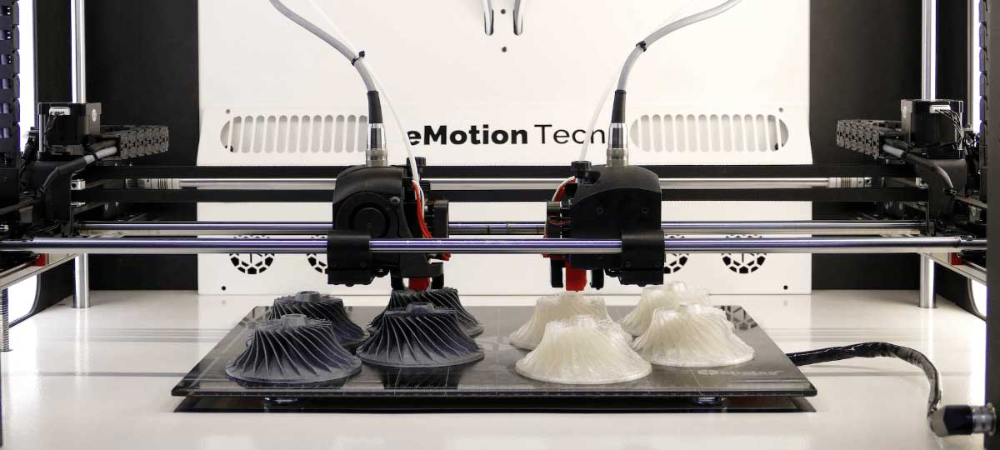

While printing a model there are a few errors which can occur while printing. The most common one is the clogged nozzle. You can identify the error by hearing a loud clicking sound from the printers nozzle.
This means, that something is blocking the way for the molten plastic to come out of the nozzle. This can be resolved by changing the old nozzle for a new one followed by heating up the clogged nozzle and cleaning it.
BED is not level
One of the most crucial parts is the bed leveling. If your printbed is not levelled correctly (this means it is perpendicular to the nozzle) it can lead to a few errors ranging from
too wide or narrow lines (messes up the models dimension) or the molten plastic not coming out at all. The best solution here is to pay extreme attention to how you level your bed. Some printers have inbuilt routines to do that and some printers can also do it automatically.

MY MODEL disappears in the slicer
This is an easy one. When the 3D model doesnt appear in the slicer, it usually has to do with flipped normals. You can fix that easily by recalculating the normals in your modeling software.